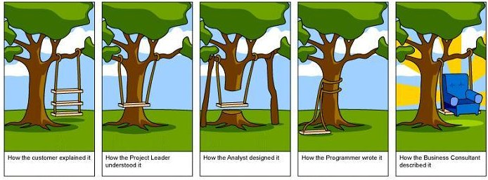
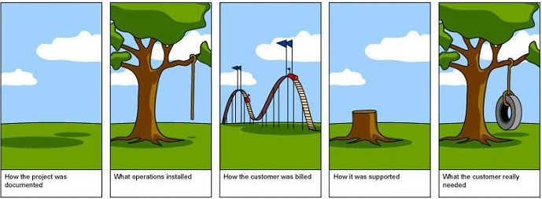
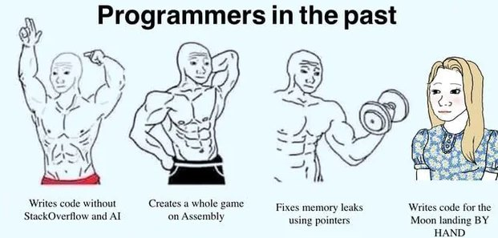
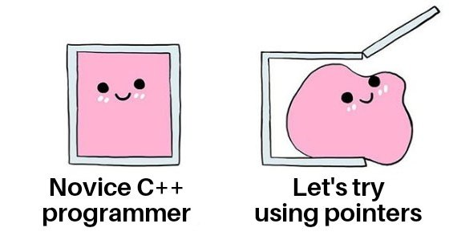
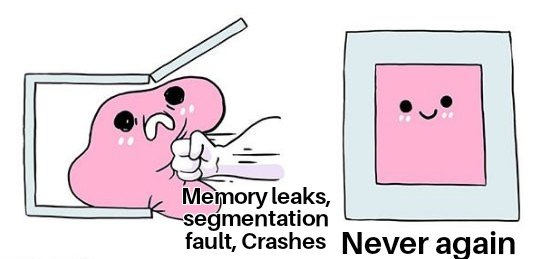

Это вторая часть статьи Путеводитель по чужим STL, возможно будет и третья про разные трюки-хаки с контейнерами, как наберется материал.
Стандартная библиотека плюсов оказалась почти непригодной для игровой разработки и поняли это практически сразу, как попытались её использовать. Крупнейший на тот момент издатель Electronic Arts стал самым известным примером реализации стандартной библиотеки для разработчиков игр (но конечно же были и другие, менее именитые), и силами команд нескольких студий под руководством Paul Pedriana это было претворено в жизнь.
Корни EASTL уходят в Maxis к 1998-му году, когда Пол работая над SimCity 3000, выступал на GDC с докладом «High Performance Game Programming in C++» про кастомные контейнеры, стоимость вызовов и замеры производительности. Единой EASTL тогда ещё не было, но подход, из которого она потом выросла, виден уже там.
До консолидации, даже внутри одной студии, могли существовать несколько параллельных STL-реализаций, разработанных под разные игры, платформы и инструменты. Рискну предположить, что самой полной была реализация от Maxis, как одной из ведущих студий, а в других командах были поменьше, каждая со своими допущениями.
Он же в статьях и докладах упоминал, что EASTL была синтезом практик из этих внутренних вариантов, а не работой одного человека с нуля, и в основе большой EASTL лежит коллективный опыт нескольких инженерных команд, даже если формальным автором финальной публичной версии и статьи остался он один. Конкретные имена соавторов отдельных модулей (аллокаторов, фиксированных контейнеров и т.д.) указаны в репо, но слава досталась Полу.
Свой плюсовый стандарт
Стандартная библиотека C++ проектировалась как универсальная, стабильная и корректная. Это её сила и одновременно её проблема, потому что универсальное решение почти никогда не бывает оптимальным для конкретного случая. А разработка игры всегда была и останется этим конкретным случаем с принципиально другими ограничениями, добавьте сюда что в EA делали большую часть своих игр сначала под консоли и потом под уже пк, то и решения ориентированы в основном под память и особенности консолей.
Игровая консоль сильно отличается от обычного пк (сейчас уже поменьше, но особенности все равно есть), потому-то что все дальнейшие решения EASTL растут именно отсюда:
Память фиксирована и её мало... ну как мало... памяти всегда мало, на консоли нет виртуальной и нет свопа и если кончилась RAM, то игра просто крашится. Игры EA середины нулевых работали в физическом объеме 32Мб с несколькими свободными килобайтами, а некоторые вообще с нулём, ставя out-of-memory callback, который в момент запроса шёл освобождать память где-то ещё. Иногда успешно, иногда нет.
Фрагментация убивает. Она убивает даже сейчас, и на моем недавнем проекте на ХBox после часа игры объем фрагментированной памяти подбирается к 200Мб, т.е. это не какие-то жалкие килобайты. Раз нет виртуальной памяти, то дырки в куче не «размазываются» железом и аллокатор, который оставляет мусор между блоками, рано или поздно не найдёт непрерывный кусок нужного размера, и всё, дальше смотри пункт про фиксированную память.
Кэши меньше и алгоритмы выборки слабее, чем на PC. Промахи по кэшу стоят дороже (меньше блоки предвыборки), ветвления стоят дороже (меньше BPU), виртуальные вызовы стоят дороже (меньше объем таблиц переходов). Не-настольные платформы (портативках и мобилках) и вовсе проседают на мелких выборках в память при долгой работе (читай косвенным переходам/частым обращениям по разным адресам) и это одна из причин, почему EASTL избегал и избегает лишних слоёв абстракции, ведь даже промах кэша на консоли или телефоне обходится дороже, чем на PC с его агрессивным алгоритмом выборки данных и бездонным кешем.
Всё, что тянет лишние данные в кэш-линию, стоит дорого. EASTL избегает лишних вызовов (даже инлайнящихся), потому что это создаёт лишние обращения к памяти и разрастание кода функций, что сильно бьет уже по кешу инструкций, т.е. больше инструкций в алгоритме физически медленнее.
Debug-сборка тоже обязана быть быстрой. Игру тестируют люди, руками, итеративно и если debug-билд еле шевелится, то тестировать её становится физически сложно или невозможно.
Из этого списка появляется главная идея самой EASTL - проблема не в алгоритмах (они отличные) и даже не в интерфейсах контейнеров (они удобные), но проблема лежит в самой модели памяти, которую использует стандарт. И раз уж корень в модели памяти, чинить нужно в первую очередь её, и всё что с ней связано, т.е. локальность данных, временную и пространственную, связность данных и сами аллокаторы, эти данные порождающие.

Некоторым танцорам мешают...
...ноги, как известно. Как выглядит требование стандарта к аллокатору (упрощённо, typedef-ы я выкинул):
template <typename T>
class allocator
{
public:
template <class U> struct rebind { typedef allocator<U> other; };
T* allocate(size_type n, const void* hint = 0);
void deallocate(T* p, size_type n);
void construct(T* p, const T& val); // аллокатор ещё и конструирует объекты
void destroy(T* p);
size_type max_size() const;
};Выглядит хорошо, но этот дизайн в разработке стал источником болей. Они разные, каждая болит по своему и каждая тянет за собой реальные последствия.
Аллокатор привязан к типу, а не к экземпляру. Стандартный аллокатор является классом, а не объектом и вся информация о том, откуда брать память, живёт в типе, а не в конкретном инстансе контейнера. Поэтому когда вам нужен именно инстанс‑based аллокатор (например, «этот вектор берёт память вот из этого конкретного пула, а тот из другого»), то вам приходится делать два разных класса, чтобы это сделать.
// Стандартный allocator, где вся информация о пуле "вшита" в тип.
// Если хотим взять память из двух разных пулов? Придётся сделать два разных класса.
template <typename T>
class PoolAAllocator {
public:
T* allocate(std::size_t n) {
return static_cast<T*>(g_poolA.alloc(n * sizeof(T)));
}
void deallocate(T* p, std::size_t n) {
g_poolA.free(p);
}
// ... construct, destroy, rebind, и весь остальной обязательный набор
};
template <typename T>
class PoolBAllocator {
public:
T* allocate(std::size_t n) {
return static_cast<T*>(g_poolB.alloc(n * sizeof(T)));
}
void deallocate(T* p, std::size_t n) {
g_poolB.free(p);
}
// ... тот же самый код, только другой пул
};
// Получаем два вектора РАЗНЫХ типов,
// хотя логически это два одинаковых вектора Foo с разным источником памяти
std::vector<Foo, PoolAAllocator<Foo>> vecFromPoolA;
std::vector<Foo, PoolBAllocator<Foo>> vecFromPoolB;
// Они не взаимозаменяемы на уровне типа. Нельзя написать функцию,
// которая одинаково работает с обоими типы контейнеров разные.
// Для vecFromPoolB нужна ОТДЕЛЬНАЯ перегрузка или шаблон
void ProcessVector(std::vector<Foo, PoolAAllocator<Foo>>& v);Технически проблема глубже, чем просто "дизайн неудобный" и по стандарту C++98/03 предполагалось (хоть и не всегда буквально требовалось), что все инстансы allocator<T> для одного T эквивалентны и взаимозаменяемы (могут освобождать память друг друга). Это следствие того, что аллокатор по сути является статeless-типом, а не объектом с состоянием.
Если нужно, чтобы vector<Foo> брал память из пула А, а другой vector<Foo> из пула Б, стандартный дизайн вынуждает создавать два разных типа аллокатора (PoolAAllocator<Foo> и PoolBAllocator<Foo>), а не просто передать два разных объекта одного типа с разными указателями на пул.
В EASTL это решается наоборот и её аллокатор является обычным объектом с состоянием (хранит указатель/имя), который просто передаётся контейнеру как значение при создании, и его можно менять через set_allocator, то есть аллокатор стал инстанс-ориентированным по дизайну, а не только "местами эмулирующим" это через хаки.
// Один и тот же тип аллокатора, разные инстансы с разным состоянием
eastl::allocator poolAAlloc("PoolA", &g_poolA);
eastl::allocator poolBAlloc("PoolB", &g_poolB);
// Один и тот же тип вектора, но разные объекты-аллокаторы переданы в конструктор
eastl::vector<Foo> vecFromPoolA(poolAAlloc);
eastl::vector<Foo> vecFromPoolB(poolBAlloc);
// Можно писать функции, не завязанные на конкретный пул:
void ProcessVector(eastl::vector<Foo>& v); // работает с обоими
// Можно даже поменять пул на лету:
vecFromPoolA.set_allocator(poolBAlloc);С++11 частично решил эту проблему, введя allocator_traits, а также разрешив стейтфул-аллокаторы, что убрало жёсткое допущение "все аллокаторы одного типа обязаны быть взаимозаменяемы". Но фундаментальная проблема осталась и если у PoolAAllocator<T> и PoolBAllocator<T> всё ещё два разных типа, то vector<Foo, PoolAAllocator<Foo>> и vector<Foo, PoolBAllocator<Foo>> будут разными типам контейнеров, т.е. реально поменялось очень мало.
В C++17 появились std::pmr::polymorphic_allocator и std::pmr::memory_resource которые разрешили разное поведение аллокации в зависимости от memory_resource, из которого он сконструирован, и поскольку memory_resource использует полиморфизм на уровне рантайма, то появилась возможность переключать алгоритм аллокации на лету.
Это практически то же самое решение, что и в EASTL и аллокатор становится настоящим объектом с состоянием внутри контейнера (обёртка над указателем на memory_resource), а не разными типами, причём автор пропозала (Pablo Halpern, N3916) явно формулировал проблему в тех же терминах, что и EASTL в 2007.
Пример с poolAAlloc/poolBAlloc можно переписать почти слово в слово на std::pmr, но теперь у нас появилось отдельное пространство имен внутри std, и код везде тоже придется переписывать.
std::pmr::monotonic_buffer_resource poolA(&bufferA, sizeA);
std::pmr::monotonic_buffer_resource poolB(&bufferB, sizeB);
std::pmr::vector<Foo> vecFromPoolA(&poolA);
std::pmr::vector<Foo> vecFromPoolB(&poolB);
void ProcessVector(std::pmr::vector<Foo>& v); // один тип, работает с обоимиКак вы помните... за все приходится платить, и здесь ценой будут виртуальные вызовы внутри memory_resource (do_allocate/do_deallocate виртуальные), то есть решена проблема "инстанс vs тип", но заплачено virtual dispatch, что все еще плохо для маленьких кэшей и памяти консолей.
Поэтому в геймдеве, особенно консольном, pmr приняли довольно вяло, и EASTL-подобный подход (объект-аллокатор без virtual) для многих студий так и остаётся предпочтительным, потому что не тянет за собой оверхеда на виртуальные вызовы с каждой аллокаций.

Allocator-rebind
rebind (ребайнд) это механизм в стандартной модели аллокаторов C++, который позволяет контейнеру взять аллокатор, параметризованный одним типом, и получить из него аллокатор для другого типа. Если вы написали что-то вида:
std::list<int, MyAllocator<int>> myList;То вы сделали аллокатор для int, но std::list внутри себя хранит вовсе не голые int, а узлы связного списка, каждый из которых содержит int плюс два указателя (next/prev) и реальный тип, который нужно выделять, будет что-то вроде ListNode<int>, а вовсе не int. И контейнеру нужен способ превратить переданный ему MyAllocator<int> в MyAllocator<ListNode<int>>, именно это делает rebind.
template <typename T>
class MyAllocator {
public:
template <typename U>
struct rebind {
typedef MyAllocator<U> other;
};
// ...
};
// Дай мне мой же аллокатор, но перенастроенный на тип узла
typedef typename MyAllocator<int>::rebind<ListNode<int>>::other NodeAllocator;
NodeAllocator nodeAlloc; // теперь аллоцирует ListNode<int>, а не intПо сути rebind будет "фабрикой типов", и если дать аллокатор для T, то rebind<U>::other выдаёт тот же аллокатор, но для U. В C++11 это формально упростили и rebind стал необязательным для аллокатора, и теперь std::allocator_traits умеет вывести его автоматически, но сам механизм никуда не делся и просто уехал под капот трейтов и библиотеки. Т.е. убрали ручной boilerplate для автора аллокатора или контейнера, но на саму кодогенерацию это не повлияло и компилятор по-прежнему инстанцирует ребайнднутые типы, поэтому рост числа шаблонов никуда не делся и все также порождает взрыв шаблонов, превращаясь в лишний код и лишние вызовы.

Иммутабельность аллокатора
Аллокатор в контейнере нельзя поменять после конструирования и до него нельзя дотянуться, потому что контейнер даёт вам только копию своего аллокатора через get_allocator(), а установить свой можно только в конструкторе. Для игр, где часто бывает нужно создать контейнер, и только после создания можно будет сказать ему откуда брать память, это очень неудобно. А еще есть отложенные и параллельные задачи, которые берут аллокатор того потока, который будет их выполнять, тут уже время между созданием контейнера и реальной установкой аллокатора в него может быть несколько миллисекунд.
EASTL меняет сам подход к тому что мы понимаем под аллокатором, теперь он больше похож на пару malloc/free, чем на new/delete и просто выделяет сырые байты.
class allocator
{
public:
explicit allocator(const char* name = "EASTL"); // у аллокатора есть имя
// Обычное выделение и выделение с выравниванием и смещением:
void* allocate(size_t n, int flags = 0);
void* allocate(size_t n, size_t alignment, size_t offset, int flags = 0);
void deallocate(void* p, size_t n);
const char* get_name() const;
void set_name(const char* name);
};Смотрите, что тут поменялось по сравнению со стандартом, и почему именно такие изменения были сделаны:
Теперь аллокатор не обязан быть шаблоном, нет
rebind, нет взрыва инстанцирований, нет member-темплейтов.Добавился
flags, например как подсказка аллокатору, что это временная память, или постоянная, или для видеокарты, или для файлового чтения. Мелочь, но на ней держится целая техника борьбы с фрагментацией (о ней ниже).Теперь у аллокатора есть имя, и каждое выделение можно протегать, и в отчёте о памяти будет видно куда ушли эти 4 мегабайта, или 400 или 4 гигабайта.
Про flags стоит сказать отдельно, потому что это очень красивая идея, которая позволяет строить иерархии областей памяти (опять же прочитать, что это такое можно в статье про аллокаторы или книге). Игровые кучи EA делят память на постоянную и временную: очень упрощенно будет (иерархии бывают разные), что постоянная (выделенная на старте уровня и живущая до его конца) растёт с одного конца кучи, временная (выделяемая и освобождаемая хаотично), как вы уже догадались с другого.
В результате постоянные аллокации плотно упакованы наверху и не оставляют «мёртвых зон» среди временных внизу. Флаг в allocate будет самым простым способом сказать куче, с какого конца блока памяти её откусывать. Стандартный аллокатор такого сделать не может в принципе, а для некоторых игр EA без этой оптимизации просто не хватало памяти на запуск. Вот такая организация памяти позволяет экономить до 10% реально используемого объема, просто за счет грамотного разведения по типам данных.
[временная --> (свободное место) <-- постоянная]
(младшие адреса) (старшие адреса)Соглашения контейнеров
EASTL не переписывает интерфейсы ради переписывания. Наоборот, он гарантирует, что существующий код на std::vector будет вести себя так же если превратится в eastl::vector, а изменения приходят только через новые методы, дополнительные шаблонные параметры или вообще новые контейнеры.
Из главных особенностей EASTL часто выделяют бережное отношение к пустым объектам и пустой контейнер почти никогда не выделяет память. А некоторые реализации std::list и std::map при конструировании сразу создают узел-сентинел, но мы хотим чтобы пустой контейнер стоил ноль байт кучи.
Например пустой std::deque в большинстве реализаций делает две аллокации.
template <typename T>
struct SpyAllocator {
using value_type = T;
SpyAllocator() = default;
template <typename U>
SpyAllocator(const SpyAllocator<U>&) {}
T* allocate(std::size_t n) {
std::cout << " allocate: " << n << " x " << sizeof(T)
<< " bytes (" << n * sizeof(T) << " total)\n";
return static_cast<T*>(::operator new(n * sizeof(T)));
}
void deallocate(T* p, std::size_t) noexcept {
::operator delete(p);
}
};
template <typename T, typename U>
bool operator==(const SpyAllocator<T>&, const SpyAllocator<U>&) { return true; }
template <typename T, typename U>
bool operator!=(const SpyAllocator<T>&, const SpyAllocator<U>&) { return false; }
int main() {
std::cout << "vector (empty):\n";
std::vector<int, SpyAllocator<int>> v; // ожидаем тишина
std::cout << "list (empty):\n";
std::list<int, SpyAllocator<int>> l; // здесь возможен sentinel-узел
std::cout << "map (empty):\n";
std::map<int, int, std::less<int>,
SpyAllocator<std::pair<const int, int>>> m; // тоже возможен
std::cout << "deque (empty):\n";
std::deque<int, SpyAllocator<int>> d; // а вот здесь, скорее всего, будет allocate
std::cout << "\n--- добавим по одному элементу ---\n";
std::cout << "vector.push_back:\n"; v.push_back(1);
std::cout << "list.push_back:\n"; l.push_back(1);
std::cout << "map.insert:\n"; m.insert({1, 1});
}GCC/CLANG
vector (empty):
list (empty):
map (empty):
deque (empty):
allocate: 8 x 8 bytes (64 total)
allocate: 128 x 4 bytes (512 total)
--- добавим по одному элементу ---
vector.push_back:
allocate: 1 x 4 bytes (4 total)
list.push_back:
allocate: 1 x 24 bytes (24 total)
map.insert:
allocate: 1 x 40 bytes (40 total)
==========================================================
MSVC
vector (empty):
list (empty):
allocate: 1 x 24 bytes (24 total)
map (empty):
allocate: 1 x 40 bytes (40 total)
deque (empty):
allocate: 1 x 16 bytes (16 total)
--- добавим по одному элементу ---
vector.push_back:
allocate: 1 x 4 bytes (4 total)
list.push_back:
allocate: 1 x 24 bytes (24 total)
map.insert:
allocate: 1 x 40 bytes (40 total)Еще есть reset(), и это, пожалуй, лучшее «игровое» расширение, которое потом перекочевало в очень много движков и игр, потому что reset() в одну операцию сбрасывает контейнер в пустое состояние, не освобождая память объектов.
Типичный сценарий, вы построили контейнер в куске scratch-памяти (например, во временном буфере кадра), поработали с ним, а в конце просто «обнулили» без обхода и разрушения всех узлов и вызовов dealloc/free. Если интересно, то можете почитать про разные виды аллокаторов в одной из моих прошлых статей и еще больше примемов и теории по аллокаторам в книге Game++.
// Классический паттерн: временная таблица в буфере кадра
eastl::hash_map<int, Enemy*> visible(frame_allocator); // память из frame-аллокатора
build_visibility(visible);
render(visible);
visible.reset(); // не clear()! Просто забыли про всё разом, O(1)Тонкость reset() , что он безопасен только для типов с тривиальным деструктором, иначе вы получите утечки или что похуже, потому что после выполнения reset у контейнера нет аллоцированной памяти вообще. То есть reset не "оставляет память объектов, просто помечая контейнер пустым", а заставляет контейнер забыть про всю память, которой тот владел.
Смысл в том, что этой памятью владеет не контейнер, а внешний scratch-аллокатор (буфер кадра), и она будет освобождена оптом, когда сбросывается весь буфер целиком. reset именно поэтому и безопасен в таком паттерне, что контейнер отпускает указатели, ничего не вызывая, а реальное освобождение делает аллокатор где-то в другом месте.
В стандартной модели такое сделать «нельзя», потому что контейнер обязан при разрушении (или clear) вызвать деструктор каждого элемента и вернуть память через deallocate. Это часть контракта и контейнер владеет своими элементами, отвечая за их корректное уничтожение. Функции «забудь про всю память, ничего не вызывая» в стандартном интерфейсе просто нет и никогда не будет, потому что для универсального контейнера это дыра в безопасности и для любого типа с нетривиальным деструктором будет гарантированной утечкой ресурсов.
Но консольная память часто фиксирована и расчерчена на регионы под жёсткий бюджет (вот эти мегабайты под кадр, вторые под уровень, а третьи постоянные), и такая арена-аллокатор становится единственным владельцем для десятков разных контейреров. А раз владелец только один, то контейнеру достаточно просто "отпустить" память, не возвращая её. std спроектирован без каких-либо предположений о такой карте, и для него куча это просто куча, безликий глобальный ресурс, из которого берут и в который возвращают.
Arena frameArena(64 * 1024); // 64 КБ scratch-памяти "на кадр"
for (int frame = 0; frame < 3; ++frame) {
// Временный контейнер строится в памяти арены
eastl::vector<EnemyVis> visible{ frameArena };
for (int i = 0; i < 100; ++i)
visible.push_back(EnemyVis{ i, float(i), float(i) });
std::cout << " построено врагов: " << visible.size() << "\n";
// ... здесь был бы render(visible) ...
visible.reset();
// Конец кадра: НЕ обходим 100 элементов, НЕ зовём deallocate.
// Просто сбрасываем всю арену одним вызовом.
frameArena.reset();
}
Fixed-контейнеры
Вот мы и добрались до fixed_string и всей его родни, ради которого EASTL часто тащут в свой проект. Это, на мой взгляд, самая ценная часть EASTL, и многие в EA пользовались этими контейнерами чаще обычных, а некоторые игры компании так вообще исключительно ими.
Идея простая: fixed-контейнер хранит свои данные прямо внутри себя, в буфере фиксированного размера, встроенном в объект. Вуаля... никаких обращений к куче нет, от слова совсем. У этого подхода даже есть отдельное название - "Zero frame allocations". Конечно, совсем чистого от аллокаций фрейма добиться сложно, но снизить их число до не скольких сотен или десятков крупных, вместо тысяч и десятков тысяч мелких вполне возможно, и этим обычно занимается performance-инженер.
template <typename T, size_t nodeCount, bool enableOverflow = true,
typename OverflowAllocator = EASTLAllocator>
class fixed_vector { /* ... буфер на nodeCount элементов лежит прямо тут ... */ };Вы объявляете fixed_vector<Entity, 64> и внутри объекта живёт место под 64 сущности и пока вы не превысили лимит, аллокатор не трогается. enableOverflow просто страховка, когда и если вы всё-таки переполнили буфер, там контейнер уйдёт за добавкой в запасной аллокатор вместо падения. Все fixed-контейнеры могут писать в лог отметки максимального использования, чтобы потом подобрать нужные размеры. А знать правильные размеры надо, если вспомнить про кэш и фрагментацию:
// std::vector данные ГДЕ-ТО в куче, объек вектора хранит указатель туда
std::vector<Vec3> path; // sizeof ~ 24 байта (3 указателя)
path.push_back({1, 2, 3}); // -> поход в кучу, возможный cache miss
// eastl::fixed_vector данные прямо под ногами, в стеке
eastl::fixed_vector<Vec3, 32> path; // sizeof ~ 32*12 + служебка, всё в объекте
path.push_back({1, 2, 3}); // -> запись в уже горячую память, ноль аллокацийКогда такой fixed_vector лежит на стеке или внутри другого объекта, его данные физически рядом с другими служебными полями и, скорее всего, уже в кэше. Для маленьких коллекций (список видимых объектов, буфер частиц эффекта, временный путь A*) это очень существенная разница от х2 до х100 по времени работы.
fixed_string та же идея для строк, просто короткое имя файла или тег живёт прямо в объекте, без обращения к аллокатору, fixed_substring просто view на кусок чужой строки без копирования, задолго до std::string_view и span из C++17.
std::inplace_vector принят в C++26. P0843R14 был принят в рабочий документ на июньском заседании 2024 года в Сент-Луисе, это как раз fixed_vector из EASTL 2007 года, только под другим именем. Динамически изменяемый массив с фиксированной на этапе компиляции ёмкостью и встроенным хранением, в самом пропозал EASTL прямо назван как prior art для ориентирования на механизм работы.
Почему так поздно? Просто планка "войти в стандарт" несравнимо выше, чем "сделать для своих игр" и своей STL, какой бы крутой она ни была. EASTL все равно остается внутренней библиотекой, пусть и крупнейшего издателя, и ему достаточно было, чтобы оно работало на консолях и в проектах компании.
Комитету нужно специфицировать поведение на все возможные случаи всего возможного железа с семантикой исключений, инвалидацией итераторов, constexpr-поведением и много чего еще.

Intrusive-контейнеры
Вторым столпом всей библиотеки EASTL стали интрузивные контейнеры, когда не контейнер выделяет узлы под ваши объекты, а вы сами встраиваете «ссылочные поля» в свой объект, и контейнер просто сшивает их в список.
// Обычный std::list<Widget> хранит указатель на Widget внутри своего узла:
// node { prev, next, Widget* } -> Widget где-то ещё в куче
// Intrusive-список требует, чтобы Widget сам был узлом:
struct Widget : public eastl::intrusive_list_node // prev/next живут в самом Widget
{
int hp;
};
eastl::intrusive_list<Widget> active;
Widget w;
active.push_back(w); // ноль аллокаций: узел это сам wЧто это даёт, помимо очевидного нуля аллокаций? Объект можно вынуть из списка, не имея ссылки на сам список, потому что поля prev/next живут в объекте, важно, когда вы раздаёте клиентам указатели на элементы, а те возвращают их обратно.
eastl::intrusive_list<Widget> active;
void spawn(Widget& w) {
active.push_back(w); // выдали клиенту указатель на w
}
void kill(Widget& w) {
// У нас на руках только сам объект, ссылки на 'active' нет.
// Обычному списку понадобился бы итератор ИЛИ сам контейнер.
// Интрузивному хватает объекта: prev/next живут в нём самом.
eastl::intrusive_list<Widget>::remove(w); // O(1), статический метод
}Теперь элемент не обязан быть копируемым. Обычные контейнеры при вставке копируют, а интрузивный просто перецепляет указатели. Один объект может лежать в нескольких несвязанных списках сразу, если встроить несколько наборов ссылочных полей.
// Два независимых набора prev/next через разные базовые типы-теги
struct ByHealthTag : public eastl::intrusive_list_node {};
struct ByDistanceTag: public eastl::intrusive_list_node {};
struct Enemy : public ByHealthTag, public ByDistanceTag {
int hp;
float distance;
};
eastl::intrusive_list<ByHealthTag> byHealth;
eastl::intrusive_list<ByDistanceTag> byDistance;
Enemy e{ /* ... */ };
byHealth.push_back(e); // цепляется через поля ByHealthTag
byDistance.push_back(e); // цепляется через поля ByDistanceTag
// один и тот же объект e одновременно в двух несвязанных списках,
// и его удаление из одного не трогает другойПлатить приходится за все, и теперь объект «знает», что он элемент контейнера, то есть абстракция протекает в реализацию, но в геймдеве это часто приемлемая цена за отсутствие аллокаций в хотпасе.
struct Widget : public eastl::intrusive_list_node { // <- уже протечка
int hp; // тип знает про список
};Почему такие контейнеры никогда не завезут в std? Тут я поостерегусь говорить "никогда", потому что fixed-контейнеры тоже считали "невозможными для std", а в C++26 приняли. Может и с интрузивными в один июльский вечерок будет также, ибо попытки уже были и одна даже дошла до комитета, но заглохла.
Есть Proposal P0406 "Intrusive Containers" Хэла Финкеля (https://github.com/hfinkel/intrusive-containers-proposal, https://www.open-std.org/jtc1/sc22/wg21/docs/papers/2016/p0406r1.html), который предлагает затащить подмножество Boost.Intrusive, хорошо известные в народе. Он дошел до LEWG этапа (Library Evolution Working Group), т.е. подачи на рассмотрение в комитет, но дальше R1/R2 (2016) дело фактически не двинулось, и на сегодня стандартная библиотека не предлагает никаких реализаций интрузивных контейнеров.
Почему не могут затащить? Интрузивный контейнер тоже ломает модель владения, на которой стоит вся STL и если inplace_vector при своей необычности всё еще владеет элементами, просто храня их в себе, то интрузивный контейнер не владеет ничем, и это выбивает фундамент из-под стандартных гарантий. Кто вызывает деструкторы? Когда? Что происходит при разрушении контейнера, если объекты живут дольше? Стандарт построен на "контейнер владеет и отвечает за lifetime"; интрузивный это ломает, и специфицировать такое как универсальную компоненту сейчас практически невозможно, в С+17 могли бы попробовать, но сейчас уже поздно.
Sorted vectors
std::map и std::set это почти всегда красно-чёрные деревья, где каждый элемент лежит в отдельном узле кучи, узлы связаны указателями и разбросаны по памяти, и при обходе узлов мы получим парад cache miss'ов. EASTL добавляет vector_map, vector_set , которые являются реализацией тех самых «отсортированных векторов» из «Effective STL» Мейерса.
std::map<int, Enemy>
// дерево, каждый узел отдельно в куче, обход прыгает по памяти
eastl::vector_map<int, Enemy>
// один непрерывный массив, отсортированный по ключуКрасно-чёрное дерево платит за свой поиск O(log n) россыпью узлов по куче, где каждый элемент будет отдельной аллокацией, да и сам узел это не только ваши key/value, но ещё два-три указателя и флаг цвета. Соотвественно при поиске вы прыгаете по этим указателям, нагружая кеш, потому что соседние по значению ключи (на 99%) лежат в памяти где попало.
Отсортированный вектор устроен так, что все его элементы лежат в одном непрерывном блоке памяти, и поиск будет идти по сплошному блоку, который кеш как раз любит, и там нет никаких указателей, и данные плотно упакованы. Для коротких ключей до 8байт, vector_map обгоняет std::map даже там, где по интуиции должен проигрывать.
Как вы знаете... платить приходится за всё, и здесь ценой будут вставка и удаление, которые становятся O(n), потому что держать вектор отсортированным можно только сдвигая хвост при вставке, а любая реаллокация инвалидирует итераторы и указатели. То есть vector_map это не «map, только быстрее», а контейнер под конкретный паттерн, когда набил один раз и много читаешь.
При чем здесь игродев? Огромная доля игровых «словарей» будут как раз такими таблицами, собранными на загрузке уровня и дальше только опрашиваемые (id→ассет, имя→хендл, всевозможные реестры и конфиги). Запись в них идёт редко и пачкой, а пачку тоже выгоднее сделать массивов и отсортировать перед вставкой, чем вставлять по одному. А на маленьких N (до 50-100 объектов, в зависимости от размера кеша, а их в игре большинство) бинарный поиск по вектору обгоняет дерево в разы, и нередко даже линейный проход оказывается быстрее, просто потому что у вас всё уже лежит в кэше.
Почему такого долго не было в std? Считалось, что отсортированный вектор является идиомой, а не реальным типом, который имеет широкое практическое применение и у Мейерса это просто один из советов (Item 23, предпочитайте отсортированные vector'ы ассоциативным контейнерам).
В C++23 приняли std::flat_map/std::flat_set (P0429 и родня), т.е. народная практика → внутренняя библиотека EA → стандарт полтора десятка лет спустя. Здесь есть небольшая тонкость, по которой std::flat_map немного проигрывает в некоторых сценариях использования eastl::vector_map .
eastl::vector_map хранит pair<Key,Value> в одном векторе (массив структур), а std::flat_map сделан адаптером над двумя параллельными массивами: отдельно ключи, отдельно значения (структура массивов). И при чистом поиске, вида "есть этот элемент в контейнере" вы обходите только вектор ключей, не таща в кэш-линии ненужные значения, так что на lookup-тяжёлых нагрузках плоский стандартный map выходит ещё кэш-дружелюбнее оригинала.
Но если надо найти и достать значения, то будет выигрывать уже eastl::vector_map, потому что значение уже будет лежать в кеше и его можно обработать, в стандартном flat_map придетсся сходить еше раз в память. И эти нюансы, как оказалось, тоже имеют свои последствия.
Что из этого доехало до стандарта
Самое интересное, что спустя годы стандарт C++ пришёл ко многим из этих идей, иногда почти дословно:
- emplace_back / emplace (C++11) тот самый push_back(void) / insert(key) с конструированием на месте без копии.
- std::string_view (C++17) идейный наследник fixed_substring
- std::pmr (C++17), полиморфные аллокаторы с memory_resource шаг в сторону инстанс-based аллокаторов, о которых просят разработчики игр.
- Move-семантика (C++11) закрыла бОльшую часть проблем с копированием, но Move-семантика ≠ релокация из EASTL. Move-конструктор + деструктор как раз то, чего memcpy-релокация избегает и большая часть EASTL контейнеров умеет релоцировать тривиальные типы побайтово через свои has_trivial_relocate, а не через move. trivial relocatability дошла-таки до стандарта и за P2786 проголосовали в C++26. То есть ещё одна EASTL-идея приехала в стандарт через ~18 лет.
А вот аллокаторы так и остались у стандарта неудобным, отчасти std::pmr помог, но привязка типа и виртуальность никуда не делись, поэтому EASTL (уже опенсорсный) до сих пор живёт и используется в реальных движках. Фундаментальная задача-то не изменилась с эпохи Atari, о которой я писал в прошлый раз: данные должны оказаться в правильном месте, в правильный момент и в правильной форме, иначе о производительности можно забыть. Стандартная библиотека решает эту задачу «в среднем по больнице». А там, где больница одна и очень конкретная, среднего решения не хватает, и приходится писать свою стандартную библиотеку.
За последние годы развитие сместилось от внедрения новых типов контейнеров к «полировке» существующего кода под требования современных компиляторов и стандартов C++. Большой фокус был сделан на обеспечении бесшовной работы с C++20/23, включая полноценную поддержку новых типов и constexpr-семантики для многих алгоритмов и контейнеров, фиксов статических анализаторов. Библиотека последние несколько лет считается индустриальным стандартом, для использования внутри игровых движков самых разных размеров, где std слишком медленен или неудобен, и делает это с учетом всех современных требований к безопасности кода и кроссплатформенности.
З.Ы. EASTL сейчас лежит на GitHub под BSD-лицензией (https://github.com/electronicarts/EASTL)
← Все статьи